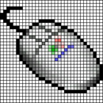
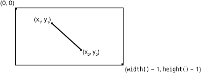
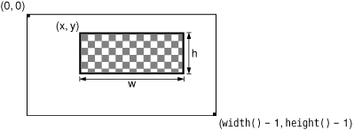

|
|
Many custom widgets are simply a combination of existing widgets, whether they are built-in Qt widgets or other custom widgets such as HexSpinBox. Custom widgets that are built by composing existing widgets can usually be developed in Qt Designer:
Naturally, combining existing widgets can also be done entirely in code. Whichever approach is taken, the resulting class is a QWidget subclass.
If the widget has no signals and slots of its own and doesn't reimplement any virtual functions, it is even possible to simply assemble the widget by combining existing widgets without a subclass. That's the approach we used in Chapter 1 to create the Age application, with a QWidget, a QSpinBox, and a QSlider. Even so, we could just as easily have subclassed QWidget and created the QSpinBox and QSlider in the subclass's constructor.
When none of Qt's widgets are suitable for the task at hand, and when there is no way to combine or adapt existing widgets to obtain the desired result, we can still create the widget we want. This is achieved by subclassing QWidget and reimplementing a few event handlers to paint the widget and to respond to mouse clicks. This approach gives us complete freedom to define and control both the appearance and the behavior of our widget. Qt's built-in widgets, such as QLabel, QPushButton, and QTableWidget, are implemented this way. If they didn't exist in Qt, it would still be possible to create them ourselves using the public functions provided by QWidget in a completely platform-independent manner.
To demonstrate how to write a custom widget using this approach, we will create the IconEditor widget shown in Figure 5.2. The IconEditor is a widget that could be used in an icon editing program.

In practice, before diving in and creating a custom widget, it is always worth checking whether the widget is already available, either as a Qt Solution (http://www.trolltech.com/products/qt/addon/solutions/catalog/4/) or from a commercial or non-commercial third party (http://www.trolltech.com/products/qt/3rdparty/), since this could save a lot of time and effort. In this case, we will assume that no suitable widget is available, and so we will create our own.
Let's begin by reviewing the header file.
#ifndef ICONEDITOR_H
#define ICONEDITOR_H
#include <QColor>
#include <QImage>
#include <QWidget>
class IconEditor : public QWidget
{
Q_OBJECT
Q_PROPERTY(QColor penColor READ penColor WRITE setPenColor)
Q_PROPERTY(QImage iconImage READ iconImage WRITE setIconImage)
Q_PROPERTY(int zoomFactor READ zoomFactor WRITE setZoomFactor)
public:
IconEditor(QWidget *parent = 0);
void setPenColor(const QColor &newColor);
QColor penColor() const { return curColor; }
void setZoomFactor(int newZoom);
int zoomFactor() const { return zoom; }
void setIconImage(const QImage &newImage);
QImage iconImage() const { return image; }
QSize sizeHint() const;
The IconEditor class uses the Q_PROPERTY() macro to declare three custom properties: penColor, iconImage, and zoomFactor. Each property has a data type, a "read" function, and an optional "write" function. For example, the penColor property is of type QColor and can be read and written using the penColor() and setPenColor() functions.
When we make use of the widget in Qt Designer, custom properties appear in Qt Designer's property editor below the properties inherited from QWidget. Properties may be of any type supported by QVariant. The Q_OBJECT macro is necessary for classes that define properties.
protected:
void mousePressEvent(QMouseEvent *event);
void mouseMoveEvent(QMouseEvent *event);
void paintEvent(QPaintEvent *event);
private:
void setImagePixel(const QPoint &pos, bool opaque);
QRect pixelRect(int i, int j) const;
QColor curColor;
QImage image;
int zoom;
};
#endif
IconEditor reimplements three protected functions from QWidget and has a few private functions and variables. The three private variables hold the values of the three properties.
The implementation file begins with the IconEditor's constructor:
#include <QtGui>
#include "iconeditor.h"
IconEditor::IconEditor(QWidget *parent)
: QWidget(parent)
{
setAttribute(Qt::WA_StaticContents);
setSizePolicy(QSizePolicy::Minimum, QSizePolicy::Minimum);
curColor = Qt::black;
zoom = 8;
image = QImage(16, 16, QImage::Format_ARGB32);
image.fill(qRgba(0, 0, 0, 0));
}
The constructor has some subtle aspects, such as the Qt::WA_StaticContents attribute and the setSizePolicy() call. We will discuss them shortly.
The pen color is set to black. The zoom factor is set to 8, meaning that each pixel in the icon will be rendered as an 8 x 8 square.
The icon data is stored in the image member variable and can be accessed through the setIconImage() and iconImage() functions. An icon editor program would typically call setIconImage() when the user opens an icon file and iconImage() to retrieve the icon when the user wants to save it. The image variable is of type QImage. We initialize it to 16 x 16 pixels and 32-bit ARGB format, a format that supports semi-transparency. We clear the image data by filling it with a transparent color.
The QImage class stores an image in a hardware-independent fashion. It can be set to use a 1-bit, 8-bit, or 32-bit depth. An image with 32-bit depth uses 8 bits for each of the red, green, and blue components of a pixel. The remaining 8 bits store the pixel's alpha component (opacity). For example, a pure red color's red, green, blue, and alpha components have the values 255, 0, 0, and 255. In Qt, this color can be specified as
QRgb red = qRgba(255, 0, 0, 255);
or, since the color is opaque, as
QRgb red = qRgb(255, 0, 0);
QRgb is simply a typedef for unsigned int, and qRgb() and qRgba() are inline functions that combine their arguments into one 32-bit ARGB integer value. It is also possible to write
QRgb red = 0xFFFF0000;
where the first FF corresponds to the alpha component and the second FF to the red component. In the IconEditor constructor, we fill the QImage with a transparent color by using 0 as the alpha component.
Qt provides two types for storing colors: QRgb and QColor. Whereas QRgb is only a typedef used in QImage to store 32-bit pixel data, QColor is a class with many useful functions and is widely used in Qt to store colors. In the IconEditor widget, we use QRgb only when dealing with the QImage; we use QColor for everything else, including the penColor property.
QSize IconEditor::sizeHint() const
{
QSize size = zoom * image.size();
if (zoom >= 3)
size += QSize(1, 1);
return size;
}
The sizeHint() function is reimplemented from QWidget and returns the ideal size of a widget. Here, we take the image size multiplied by the zoom factor, with one extra pixel in each direction to accommodate a grid if the zoom factor is 3 or more. (We don't show a grid if the zoom factor is 2 or 1, because then the grid would leave hardly any room for the icon's pixels.)
A widget's size hint is mostly useful in conjunction with layouts. Qt's layout managers try as much as possible to respect a widget's size hint when they lay out a form's child widgets. For IconEditor to be a good layout citizen, it must report a credible size hint.
In addition to the size hint, widgets have a size policy that tells the layout system whether they like to be stretched and shrunk. By calling setSizePolicy() in the constructor with QSizePolicy::Minimum as horizontal and vertical policies, we tell any layout manager that is responsible for this widget that the widget's size hint is really its minimum size. In other words, the widget can be stretched if required, but it should never shrink below the size hint. This can be overridden in Qt Designer by setting the widget's sizePolicy property. We explain the meaning of the various size policies in Chapter 6.
void IconEditor::setPenColor(const QColor &newColor)
{
curColor = newColor;
}
The setPenColor() function sets the current pen color. The color will be used for newly drawn pixels.
void IconEditor::setIconImage(const QImage &newImage)
{
if (newImage != image) {
image = newImage.convertToFormat(QImage::Format_ARGB32);
update();
updateGeometry();
}
}
The setIconImage() function sets the image to edit. We call convertToFormat() to make the image 32-bit with an alpha buffer, if it isn't already. Elsewhere in the code, we will assume that the image data is stored as 32-bit ARGB values.
After setting the image variable, we call QWidget::update() to schedule a repainting of the widget using the new image. Next, we call QWidget::updateGeometry() to tell any layout that contains the widget that the widget's size hint has changed. The layout will then automatically adapt to the new size hint.
void IconEditor::setZoomFactor(int newZoom)
{
if (newZoom < 1)
newZoom = 1;
if (newZoom != zoom) {
zoom = newZoom;
update();
updateGeometry();
}
}
The setZoomFactor() function sets the zoom factor for the image. To prevent division by zero elsewhere, we correct any value below 1. Again, we call update() and updateGeometry() to repaint the widget and to notify any managing layout about the size hint change.
The penColor(), iconImage(), and zoomFactor() functions are implemented as inline functions in the header file.
We will now review the code for the paintEvent() function. This function is IconEditor's most important function. It is called whenever the widget needs repainting. The default implementation in QWidget does nothing, leaving the widget blank.
Just like closeEvent(), which we met in Chapter 3, paintEvent() is an event handler. Qt has many other event handlers, each of which corresponds to a different type of event. Chapter 7 covers event processing in depth.
There are many situations when a paint event is generated and paintEvent() is called. For example:
When a widget is shown for the first time, the system automatically generates a paint event to force the widget to paint itself.
When a widget is resized, the system generates a paint event.
If the widget is obscured by another window and then revealed again, a paint event is generated for the area that was hidden (unless the window system stored the area).
We can also force a paint event by calling QWidget::update() or QWidget::repaint(). The difference between these two functions is that repaint() forces an immediate repaint, whereas update() simply schedules a paint event for when Qt next processes events. (Both functions do nothing if the widget isn't visible on-screen.) If update() is called multiple times, Qt compresses the consecutive paint events into a single paint event to avoid flicker. In IconEditor, we always use update().
Here's the code:
void IconEditor::paintEvent(QPaintEvent *event)
{
QPainter painter(this);
if (zoom >= 3) {
painter.setPen(palette().foreground().color());
for (int i = 0; i <= image.width(); ++i)
painter.drawLine(zoom * i, 0,
zoom * i, zoom * image.height());
for (int j = 0; j <= image.height(); ++j)
painter.drawLine(0, zoom * j,
zoom * image.width(), zoom * j);
}
for (int i = 0; i < image.width(); ++i) {
for (int j = 0; j < image.height(); ++j) {
QRect rect = pixelRect(i, j);
if (!event->region().intersect(rect).isEmpty()) {
QColor color = QColor::fromRgba(image.pixel(i, j));
if (color.alpha() < 255)
painter.fillRect(rect, Qt::white);
painter.fillRect(rect, color);
}
}
}
}
We start by constructing a QPainter object on the widget. If the zoom factor is 3 or more, we draw the horizontal and vertical lines that form the grid using the QPainter::drawLine() function.
A call to QPainter::drawLine() has the following syntax:
painter.drawLine(x1, y1, x2, y2);
where (x1, y1) is the position of one end of the line and (x2, y2) is the position of the other end. There is also an overloaded version of the function that takes two QPoints instead of four ints.
The top-left pixel of a Qt widget is located at position (0, 0), and the bottom-right pixel is located at (width() - 1, height() - 1). This is similar to the conventional Cartesian coordinate system, but upside down, as Figure 5.3 illustrates. We can change QPainter's coordinate system by using transformations, such as translation, scaling, rotation, and shearing. We cover these in Chapter 8.

Before we call drawLine() on the QPainter, we set the line's color using setPen(). We could hard-code a color, such as black or gray, but a better approach is to use the widget's palette.
Every widget is equipped with a palette that specifies which colors should be used for what. For example, there is a palette entry for the background color of widgets (usually light gray) and one for the color of text on that background (usually black). By default, a widget's palette adopts the window system's color scheme. By using colors from the palette, we ensure that IconEditor respects the user's preferences.
A widget's palette consists of three color groups: active, inactive, and disabled. Which color group should be used depends on the widget's current state:
The Active group is used for widgets in the currently active window.
The Inactive group is used for widgets in the other windows.
The Disabled group is used for disabled widgets in any window.
The QWidget::palette() function returns the widget's palette as a QPalette object. Color groups are specified as enums of type QPalette::ColorGroup.
When we want to get an appropriate brush or color for drawing, the correct approach is to use the current palette, obtained from QWidget::palette(), and the required role, for example, QPalette::foreground(). Each role function returns a brush, which is normally what we want, but if we just need the color we can extract it from the brush, as we did in the paintEvent(). By default, the brushes returned are those appropriate to the widget's state, so we do not need to specify a color group.
The paintEvent() function finishes by drawing the image itself. The call to IconEditor::pixelRect() returns a QRect that defines the region to repaint. (Figure 5.4 illustrates how a rectangle is drawn.) As an easy optimization, we don't redraw pixels that fall outside this region.

We call QPainter::fillRect() to draw a zoomed pixel. QPainter::fillRect() takes a QRect and a QBrush. By passing a QColor as the brush, we obtain a solid fill pattern. If the color isn't completely opaque (its alpha channel is less than 255), we draw a white background first.
QRect IconEditor::pixelRect(int i, int j) const
{
if (zoom >= 3) {
return QRect(zoom * i + 1, zoom * j + 1, zoom - 1, zoom - 1);
} else {
return QRect(zoom * i, zoom * j, zoom, zoom);
}
}
The pixelRect() function returns a QRect suitable for QPainter::fillRect(). The i and j parameters are pixel coordinates in the QImage—not in the widget. If the zoom factor is 1, the two coordinate systems coincide exactly.
The QRect constructor has the syntax QRect(x, y, width, height), where (x, y) is the position of the top-left corner of the rectangle and width x height is the size of the rectangle. If the zoom factor is 3 or more, we reduce the size of the rectangle by one pixel horizontally and vertically so that the fill does not draw over the grid lines.
void IconEditor::mousePressEvent(QMouseEvent *event)
{
if (event->button() == Qt::LeftButton) {
setImagePixel(event->pos(), true);
} else if (event->button() == Qt::RightButton) {
setImagePixel(event->pos(), false);
}
}
When the user presses a mouse button, the system generates a "mouse press" event. By reimplementing QWidget::mousePressEvent(), we can respond to this event and set or clear the image pixel under the mouse cursor.
If the user pressed the left mouse button, we call the private function setImagePixel() with true as the second argument, telling it to set the pixel to the current pen color. If the user pressed the right mouse button, we also call setImagePixel(), but pass false to clear the pixel.
void IconEditor::mouseMoveEvent(QMouseEvent *event)
{
if (event->buttons() & Qt::LeftButton) {
setImagePixel(event->pos(), true);
} else if (event->buttons() & Qt::RightButton) {
setImagePixel(event->pos(), false);
}
}
The mouseMoveEvent() handles "mouse move" events. By default, these events are generated only when the user is holding down a button. It is possible to change this behavior by calling QWidget::setMouseTracking(), but we don't need to do so for this example.
Just as pressing the left or right mouse button sets or clears a pixel, keeping it pressed and hovering over a pixel is also enough to set or clear a pixel. Since it's possible to hold more than one button pressed down at a time, the value returned by QMouseEvent::buttons() is a bitwise OR of the mouse buttons. We test whether a certain button is pressed down using the & operator, and if this is the case we call setImagePixel().
void IconEditor::setImagePixel(const QPoint &pos, bool opaque)
{
int i = pos.x() / zoom;
int j = pos.y() / zoom;
if (image.rect().contains(i, j)) {
if (opaque) {
image.setPixel(i, j, penColor().rgba());
} else {
image.setPixel(i, j, qRgba(0, 0, 0, 0));
}
update(pixelRect(i, j));
}
}
The setImagePixel() function is called from mousePressEvent() and mouseMoveEvent() to set or clear a pixel. The pos parameter is the position of the mouse on the widget.
The first step is to convert the mouse position from widget coordinates to image coordinates. This is done by dividing the x() and y() components of the mouse position by the zoom factor. Next, we check whether the point is within the correct range. The check is easily made using QImage::rect() and QRect::contains(); this effectively checks that i is between 0 and image.width() - 1 and that j is between 0 and image.height() - 1.
Depending on the opaque parameter, we set or clear the pixel in the image. Clearing a pixel is really setting it to be transparent. We must convert the pen QColor to a 32-bit ARGB value for the QImage::setPixel() call. At the end, we call update() with a QRect of the area that needs to be repainted.
Now that we have reviewed the member functions, we will return to the Qt::WA_StaticContents attribute that we used in the constructor. This attribute tells Qt that the widget's content doesn't change when the widget is resized and that the content stays rooted to the widget's top-left corner. Qt uses this information to avoid needlessly repainting areas that are already shown when resizing the widget. This is illustrated by Figure 5.5.
Normally, when a widget is resized, Qt generates a paint event for the widget's entire visible area. But if the widget is created with the Qt::WA_StaticContents attribute, the paint event's region is restricted to the pixels that were not previously shown. This implies that if the widget is resized to a smaller size, no paint event is generated at all.
The IconEditor widget is now complete. Using the information and examples from earlier chapters, we could write code that uses the IconEditor as a window in its own right, as a central widget in a QMainWindow, as a child widget inside a layout, or as a child widget inside a QScrollArea (p. 152). In the next section, we will see how to integrate it with Qt Designer.
|
|
| Converted from CHM to HTML with chm2web Pro 2.85 (unicode) |